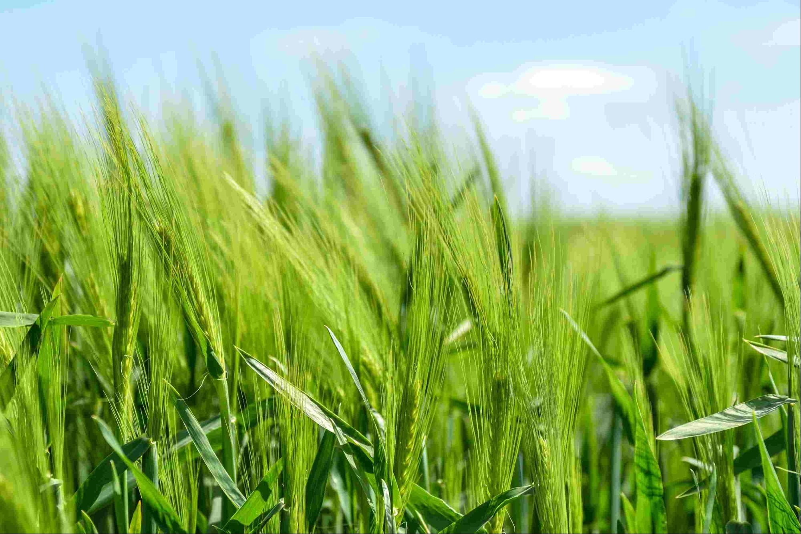

Farmers happiness is our first priority
Farmers play a vital role in providing the basics for all of our food needs as well as in changing the agricultural landscape. By managing farming practices, farmers also assure the sustainability of the whole flora and fauna. Agriculture currently occupies one-third of the Earth’s land surface. It is the central activity for much of the world’s population, providing the food for people throughout the world. Farmers are the so-called ”stewards” of agriculture.
